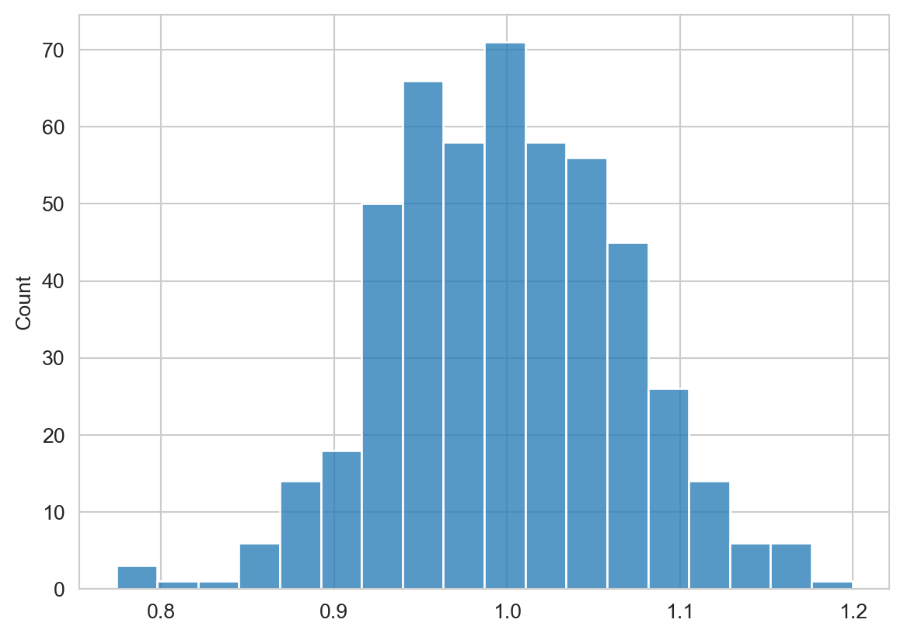
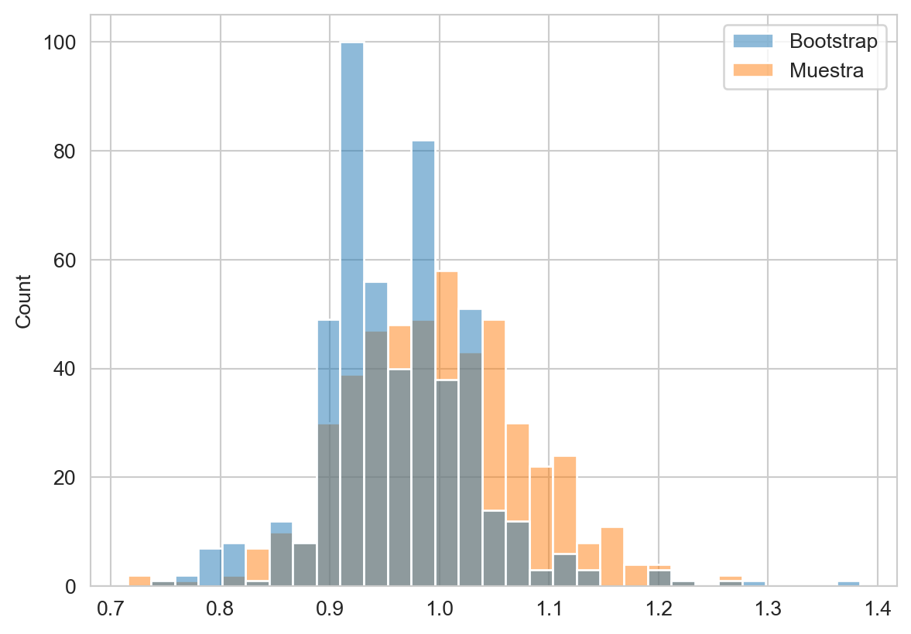

from scipy.stats import norm
from matplotlib import pylab as plt
import numpy as np
import pandas as pd
import seaborn as snsApéndice A — Estadística
El objetivo de este apéndice es complementar la información de algunos procedimientos estadísticos usados en el curso.
Paquetes usados
A.1 Error estándar
El error estándar está definido como \(\sqrt{\mathbb V(\hat \theta)}\) donde \(\hat \theta\) es el valor estimado. No para todas las estadísticas es posible tener una ecuación analítica para calcular \(\sqrt{\mathbb V(\hat \theta)}\) y en los casos donde el valor analítico no se puede calcular se puede usar la técnica de Bootstrap.
A.1.1 Media
Una de las estadísticas donde si se puede calcular analíticamente \(\sqrt{\mathbb V(\hat \theta)}\) es la media, es decir, se tiene una muestra \(\mathcal D\) con \(N\) elementos independientes y idénticamente distribuidos, entonces la media corresponde a
\[\bar x = \frac{1}{N} \sum_{x \in \mathcal D} x.\]
El error estándar de \(\bar x\) es \(\sqrt{\mathbb V(\bar x)}\). Para derivar el valor analítico de este error estándar es necesario utilizar la siguiente propiedad de la varianza:
\[\mathbb V(\sum_i a_i \mathcal X_i) = \sum_i a_i^2 \mathbb V(\mathcal X_i),\]
donde \(a_i\) representa una constante y las variables aleatorias \(\mathcal X\) son independientes. En lugar de utilizar la definición asumiendo la realización de las variables aleatorias, esto es, cuando \(\mathcal D\) tiene valores, se define la media con respecto a \(N\) variables aleatorias, i.e., \(\bar{\mathcal X} = \frac{1}{N} \sum_i^N \mathcal X_i.\) En estas condiciones se observa que para el caso del error estándar de la media la constante es \(\frac{1}{N}\) y las variables son independientes entonces
\[ \begin{split} \sqrt{\mathbb V(\bar{\mathcal X})} &= \sqrt{\mathbb V(\frac{1}{N} \sum_i^N \mathcal X_i)}\\ &= \sqrt{\sum_i^N \frac{1}{N^2} \mathbb V(\mathcal X_i)}\\ &= \sqrt{\frac{1}{N^2} \sum_i^N \sigma^2}\\ &= \sqrt{\frac{N}{N^2} \sigma^2}\\ &= \sqrt{\frac{\sigma^2}{N}} = \frac{\sigma}{\sqrt{N}}, \end{split} \]
donde \(\sigma^2\) es la varianza de la distribución. Es importante notar que \(\mathbb V(X_i)\) es independiente de \(i\) dado \(\mathcal X_i \sim F\) para cualquier \(i\), donde la distribución \(F\) tiene una varianza \(\sigma^2\) por lo tanto \(\mathbb V(X_i)=\sigma^2.\)
A.1.2 Ejemplo: Media
El siguiente ejemplo complementa la información al presentar el error estándar de la media cuando los datos vienen de una distribución Gausiana. Suponiendo que se tiene \(1000\) muestras de una distribución Gausiana \(\mathcal N(1, 4),\) i.e., \(\mu=1\) y \(\sigma=2\). La error estándar de estimar la media con esos datos está dado por \(\mathbb V(\hat \mu) = \frac{\sigma}{\sqrt{N}} = \frac{2}{\sqrt{1000}}=0.0632.\)
Continuado con el ejemplo, se simula la generación de esta población de \(1000\) elementos. El primer paso es iniciar la clase norm (que implementa una distribución Gausiana) para que se simule \(\mathcal N(1, 4).\) Es importante notar que el parámetro scale de norm corresponde a la desviación estándar \(\sigma.\)
p1 = norm(loc=1, scale=2)Usando p1 se simulan 500 poblaciones de 1000 elementos cada una, y para cada una de esas poblaciones se calcula su media. La primera linea crea la muestra \(\mathcal D\) y a continuación se calcula la media por cada población, renglón de D.
D = p1.rvs(size=(500, 1000))
mu = [x.mean() for x in D]El error estándar es la desviación estándar de mu, el cual se puede calcular con la siguiente instrucción. se tiene un valor de \(0.0665\), que es similar al obtenido mediante \(\mathbb V(\hat \mu).\)
se = np.std(mu)Para complementar la información se presenta el histograma de mu donde se puede observar la distribución de estimar la media de una población.
fig = sns.histplot(mu)
A.1.3 Ejemplo: Coeficientes OLS
El error estándar de los coeficientes estimados con mínimos cuadrados se puede calcular de la siguiente forma. El primer paso es utilizar la siguiente identidad
\[\mathbb V(A \mathcal Y) = A \Sigma A^\intercal,\]
donde \(A\) es una matriz y \(\mathcal Y\) es un vector de variables aleatorias. La matriz \(A\) en OLS es
\[A=(X^\intercal X)^{-1}X^\intercal.\]
quedando la varianza como
\[\mathbb V(\mathbf w) = A \Sigma A^\intercal,\]
donde \(\Sigma\) es la covarianza de \(\mathcal Y.\) Dado que \(\mathcal Y\) tiene una varianza constante entonces \(\Sigma=\sigma^2 I.\) Usando esta información se puede derivar la varianza de \(\mathbf w\) de la siguiente manera
\[ \begin{split} \mathbb V(\mathbf w) &= A \sigma^2 I A^\intercal \\ &= \sigma^2 A A^\intercal \\ &= \sigma^2 (X^\intercal X)^{-1}X^\intercal ((X^\intercal X)^{-1}X^\intercal)^\intercal\\ &= \sigma^2 (X^\intercal X)^{-1}X^\intercal X (X^\intercal X)^{-1} \\ &= \sigma^2 (X^\intercal X)^{-1}\\ \end{split} \]
Por lo tanto el error estándar es: \(\textsf{se}(\mathbf w) = \sigma \sqrt{(X^\intercal X)^{-1}}.\)
A.2 Bootstrap
Existen ocasiones donde no se cuenta con una ecuación cerrada para \(\mathbb V(\hat \theta)\), un ejemplo sería la mediana. En aquellas estadísticas donde no se tenga el error estándar no se pueda calcular analíticamente se puede utilizar Bootstrap.
Bootstrap es un procedimiento que permite calcular el error estándar. Suponiendo que se la estadística se calcula mediante la realización de \(N\) variables aleatorias, \(\mathcal X \sim F\), es decir, \(\theta = g(\mathcal X_1, \mathcal X_2, \ldots, \mathcal X_N).\) Por ejemplo, la media es \(g(\mathcal X_1, \mathcal X_2, \ldots, \mathcal X_N) = \frac{1}{N} \sum_i^N \mathcal X_i.\)
El Bootstrap simula la distribución \(\theta\) mediante la selección con remplazo de \(N\) elementos del conjunto de la muestra \(\mathcal D = (x_1, x_2, \ldots, x_n)\) donde \(x_i \sim F\). Es decir, se genera un nuevo conjunto \(\mathcal D_j = (x_{j_1}, x_{j_2}, \ldots, x_{j_n})\) donde \(x_{j_1}\) podría ser \(x_4\) de \(\mathcal D\) y dado que se selecciona con reemplazo entonces \(x_4\) podría aparecer otra vez en \(\mathcal D_j.\) Utilizando \(\mathcal D_j\) se puede estimar la estadística \(\hat \theta_j = g(x_{j_1}, x_{j_2}, \ldots, x_{j_n}).\) Bootstrap repite el proceso anterior \(B\) donde en cada iteración se selecciona con reemplazo \(N\) veces \(\mathcal D\). Utilizando las \(\theta_j\) calculadas se estima \(\mathbb V(\theta)\) con la siguiente ecuación
\[\mathbb V(\hat \theta) = \frac{1}{B} \sum_{j=1}^B (\hat \theta_j - \frac{1}{B} \sum_k^B \hat \theta_k)^2.\]
A.2.1 Ejemplo
Utilizando los datos generados en la Sección A.1.2 se puede calcular el error estándar de la mediana. El primer paso es tener el conjunto \(\mathcal D\) el cual puede ser cualquier renglón de los 500 de la variable D, por simplicidad se toma el primero como se muestra a continuación.
D_mediana = D[0]La variable D_mediana tiene la muestra \(\mathcal D\) con la que se trabajará para estimar el error estándar de la mediana. Se tienen que generar \(B\) repeticiones de muestrear \(\mathcal D\) \(N\) veces con reemplazo. Esto se puede implementar usando índices y números aleatorios de \([0, N)\) considerando que en Python el primer índice es \(0\). Este procedimiento se muestra en la primera linea del siguiente código. El arreglo S contiene los índices para realizar las \(B\) muestras, en la segunda linea se itera por los renglones de S y en cada operación se calcula la mediana. Es decir, en cada iteración se está calculando un \(\hat \theta_i\) que corresponde a la mediana. Finalmente, se calcula la desviación estándar de la lista B y ese valor corresponde a error estándar de la mediana.
S = np.random.randint(D_mediana.shape[0],
size=(500, D_mediana.shape[0]))
B = [np.median(D_mediana[s]) for s in S]
se = np.std(B)se tiene un valor de \(0.0735.\)
Considerando que se generaron \(500\) poblaciones de \(1000\) elementos que se encuentra en la variable D se puede visualizar el histograma de las medianas calculadas con D y aquellas obtenidas con Bootstrap. Se guardan estos dos valores en un DataFrame para posteriormente graficar el histograma, como se muestra en el siguiente código y en la Figura A.1.
df = pd.DataFrame(dict(Bootstrap=B,
Muestra=[np.median(x) for x in D]))
fig = sns.histplot(df) 